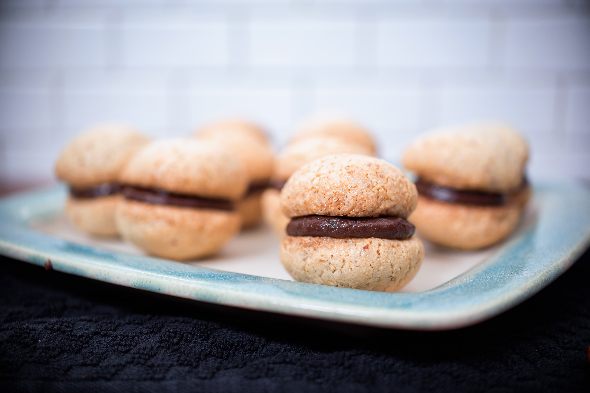

- Baklava
- Created by the Ottoman Empire, this treat can't be beat!
Filled with honey and nuts, it will make you go nuts!
- Cannoli
- This sweet treat is usually prepared during Carnevale season,
but it's so good we decided to make it year round!
- Dutch Baby
- Our signature treat! It's a large popover filled to the brim with
apples, pears, and jam!
- Macarons
- Hailing from the countryside of France, these delicate cookies are delicious!
